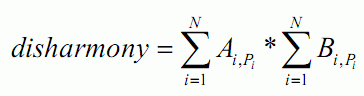

输入文件第 行是一个正整数T ，表示数据组数，接下来是T组数据。
对于每组数据，第 行是一个正整数N，表示有N对画和画框。
第2到第N+1行，每行有N个非负整数，第i+1 行第j个数表示Aij 。
第N+2到第2*N+1行，每行有N个非负整数，第i+N+1 行第j个数表示Bij 。
小T准备在家里摆放几幅画，为此他买来了N幅画和N个画框。为了体现他的品味，小T希望能合理地搭配画与画框，使得其显得既不过于平庸也不太违和。对于第 幅画与第 个画框的配对，小T都给出了这个配对的平凡度Aij 与违和度Bij 。整个搭配方案的总体不和谐度为每对画与画框平凡度之和与每对画与画框违和度的乘积。具体来说，设搭配方案中第i幅画与第Pi个画框配对，则总体不和谐度为

小T希望知道通过搭配能得到的最小的总体不和谐度是多少。
输入文件第 行是一个正整数T ，表示数据组数，接下来是T组数据。
对于每组数据，第 行是一个正整数N，表示有N对画和画框。
第2到第N+1行，每行有N个非负整数，第i+1 行第j个数表示Aij 。
第N+2到第2*N+1行，每行有N个非负整数，第i+N+1 行第j个数表示Bij 。
包含T
1
3
4 3 2
2 3 4
3 2 1
2 3 2
2 2 4
1 1 3
30第1幅画搭配第3个画框，第2幅画搭配第1个画框，第3 幅画搭配第2个画框，则总体不和谐度为30
N<=70,T<=3,Aij<=200,Bij<=200